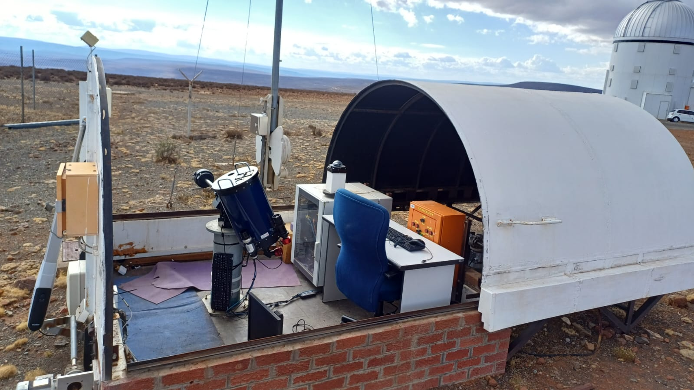
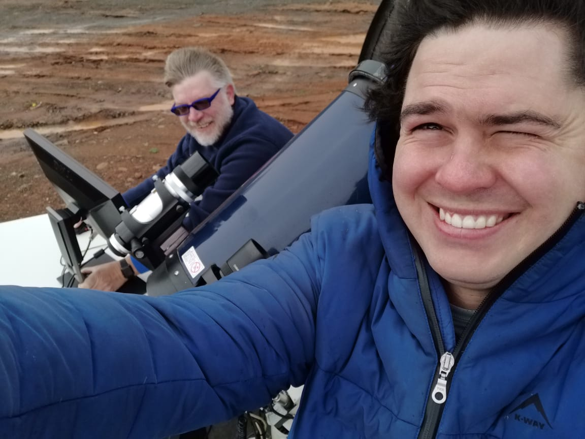

Abstract
Automated measurement of atmospheric seeing began at the South African Astronomical Observatory (SAAO) in March 2010. The original equipment consisted of a MASS-DIMM mated to a 25 cm Meade LX200 with the DIMM channel feeding a high-speed (200+ fps) IEEE1394 camera. That hardware eventually succumbed to the ravages of time. The interfaces to the MASS and DIMM camera became obsolete and difficult to support. The key failure, though, was that the mount could no longer point or track well enough to be useful anymore.
In 2024 the system was upgraded significantly and returned to routine operation. The DIMM camera and mount were replaced with newer, more performant options and the MASS-DIMM was replaced with a simple DIMM mask. We present results from the first two years of renewed operation, compared to seeing measurements from other sources at the SAAO site, and describe the updated software developed for this system.
New Hardware
The 2024 rebuild keeps the DIMM technique but modernizes the system around newer and more standardized components:
- Mount — The original Astro-Physics 900GTO german equatorial mount had become damaged from a number of pier strikes and had a failing control board. It was not going to be cost-effective to repair so it was replaced with a new Opteron CEM70-NUC. The Opteron is fully compatible with the open-source INDI control protocol and the NUC support allows for the control computer to be placed directly on the mount, greatly simplifying the cabling.
- DIMM camera — Sensor technology has improved significantly since the original DIMM camera was selected. Modern CMOS sensors have much lower read noise, higher quantum efficiency, and faster frame rates. Cameras have also become more standardized with USB 3.x becoming ubiquitous. The new camera is a ZWO ASI432MM. The unique feature of this camera is its 9 micron pixel size, the largest available in a low-cost commodity camera. This is a much better match to the LX200's long focal length and a further boost in sensitivity.
- DIMM mask — A DIMM mask leftover from the original site testing campaign at the SAAO site in Sutherland was free and available so we replaced the bulky, obsolete MASS-DIMM with it. It has two 5 cm apertures, one clear and one with a wedge prism. A second clear aperture has a slide cover that can be opened to facilitate focusing the telescope with the mask installed. The mask allows the full field of view of the new camera to be utilised which significantly reduces the burden on the system's alignment and pointing performance.



New Software
The upgrade included a complete rewrite of the acquisition and
analysis software.
Key elements:
- INDI — All hardware is controlled via the open-source INDI protocol. This allows for easy integration of the new mount and cameras and provides a standard interface for future upgrades.
- Kstars/Ekos — Kstars works on top of INDI and manages the telescope control, data acquisition, auto-guiding, and plate-solving. The auto-guiding and plate-solving use a new guide scope and camera that was added to the system. With plate-solving, the system routinely achieves pointing better than 5 arcseconds. The Ekos module handles the system's scheduling and target selection. The Ekos scheduler also defines observing sequences and the scripts that run as part of each observation. Ekos also queries weather status regularly to determine if it's safe to observe.
- Data acquisition and analysis — The acquisition of seeing data is handled by a custom Python script. It uses INDI to control the camera and acquire data in the form of SER video captures. A short full-frame capture is done to identify the positions of the DIMM spots. Then a 400x400 ROI is centered on them and a 15-second video is captured. Depending on conditions, exposure times range from 0.5 to 2 milliseconds. Even with a 16-bit readout, the ASI432MM captures 400x400 video at 300 frames per second. The SER video is converted to a datacube for the DIMM analysis. Seeing values are logged both locally and to the SALT database
Ant Infestation
The campaign with the upgraded system was interrupted for a few months in 2025 by a catastrophic ant infestation. The ants filled the control computer and destroyed both it and the mount's control module.


Results & Comparisons
Two years of renewed operation (Apr 2024 – Jun 2026) give a median DIMM seeing of 1.32″. This is bang-on agreement with the median seeing measured by the original system and reported in Catala et al. (2013, MNRAS, 436, 590).


Comparison with the SALT guider